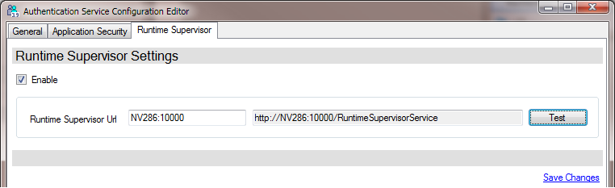

Authentication Service
Update
Sichern Sie den bestehenden Authentication Service in einem neu angelegten Verzeichnis.
Deinstallieren Sie den Windows-Service des bestehenden Authentication Service. Dazu kann der AuthenticationServiceConfigEditor verwendet werden (siehe Deinstallation).
Kopieren Sie die neuen Dateien aus dem Ordner
bin\in den Zielordner.Note
Die Datei
AuthenticationService.exe.configim Zielverzeichnis muss erhalten bleiben. Darin sind alle Konfigurationseinstellungen für den Authentication Service gespeichert.Installieren Sie den neuen Authentication Service wie im Abschnitt Installation ab 3. beschrieben.
Note
Auch wenn Sie im AuthenticationServiceConfigEditor keine Änderungen vornehmen, speichern Sie in jeden Fall mit der Funktion Save Changes.
Update der Datenbank
Bei der Datenbank handelt es sich um ein Repository. Ein Update auf die entsprechende Framework-Studio Version passiert folgendermaßen:
- Handelt es sich um ein Entwicklungs-Repository, dann erfolgt der Update über Framework Studio.
- Bei einem Runtime-Repository erfolgt der Update über den Publish Wizard oder Publish2Go Wizard.
Installation
Erstellen Sie den Zielordner für den Service.
Empfehlung:C:\Programme\Framework Systems\AuthService\Kopieren Sie den Inhalt des Ordners
bin\in den Zielordner.Jetzt müssen Sie die Konfiguration des Services festlegen. Führen Sie dazu im Zielordner das Programm
AuthenticationServiceConfigEditor.exeaus. Dieses Programm bearbeitet den Inhalt der Konfigurations-DateiAuthenticationService.exe.config.Sie erhalten das folgende Bild:

Geben Sie im Abschnitt Database Connection die gewünschte Verbindung zu der Datenbank an, in welcher der Service die Benutzerdaten ablegen soll. Standardmäßig wird dazu das Repository Ihrer Anwendung verwendet. Mit Test connection können Sie prüfen, ob die angegebene Verbindung zur Datenbank hergestellt werden kann.
Geben Sie im Abschnitt Service die folgenden Daten ein:
- Bei Name ggf. einen anderen Namen für den Service.
- Die ID müssen Sie mit Generate ID neu erzeugen. Dabei wird eine absolut eindeutige Guid generiert.
- Die URL können Sie mit Set Default auf den eigenen Rechnernamen setzen.
Dort ist z.B. auch eine IP-Adresse möglich.
Es kann ein anderer Port als
20001verwendet werden. Dann müssen die Konfigurationen der Clients, die mit dem Service kommunizieren sollen, auf den geänderten Port angepasst werden. - Für Private Key und Public Key müssen Sie mit Generate Keypair ein neues Schlüsselpaar generieren.
Abschnitt Windows-Service Hier können nur Änderungen vorgenommen werden, solange der Service nicht installiert worden ist.
Ändern Sie diese Einstellungen auch niemals manuell in der
AuthenticationService.exe.config. Ansonsten kann der Authentication-Service dem Windows-Dienst nicht mehr zugeordnet werden.- Service Name: Unter diesem Namen wird der Service in den Windows-Diensten registriert. In dem Feld können Sie einen Namens-Zusatz angeben. Das ist vor allem dann notwendig, wenn Sie mehrere Authentication-Services auf einem Rechner installieren, da der Name in den Windows-Diensten eindeutig sein muss.
- Description: Diese wird als Description in den Windows-Diensten gespeichert.
Wenn Sie diese Einstellung nachträglich ändern möchten, dann müssen Sie:
- den Dienst mit dem Link stop Service beeneden,
- ihn dem Link uninstall Service deinstallieren,
- die Änderungen vornehmen und speichern und
- den Dienst mit dem Link install Service wieder installieren. Dabei sollte der Benutzer-Account des Dienstes wieder der von vorher sein – ggf. vor der ganzen Aktion merken.
Speichern Sie die Änderungen mit Save Changes ab.
Auf der Registerkarte Application Security können erweiterte Sicherheitsanforderungen, die für Ihre Anwendungen gelten sollen, konfiguriert werden.

Mit Set Default werden die Standardeinstellungen dieser Registerkarte wiederhergestellt.
Im Bereich General Settings können Sie zunächst die vom Authentifizierungsdienst geduldete Maximallänge für Benutzernamen ändern (Einstellung Maximum username length).
Das Eingabefeld Domain controller muss leer bleiben, wenn die Authentifizierung beim Start der Endanwendung nicht automatisch mit den angemeldeten Windows-Benutzern erfolgen soll. Andernfalls muss hier der zu verwendende Domain Controller (DC) angegeben werden (z.B. mydc.mycompany.com).
Das Eingabefeld Domain muss ebenfalls leer bleiben, wenn die Authentifizierung beim Start der Endanwendung nicht automatisch mit dem angemeldeten Windows-Benutzer erfolgen soll. Andernfalls muss hier in Großbuchstaben der Name der Domäne angegeben werden (z.B. MYDOMAIN). Die Authentifizierung über die Domäne kann nur dann funktionieren, wenn Client und Authentication Service zur angegebenen Domäne gehören.
Mit dem Schalter Enable advanced security legen Sie fest, ob die erweiterten Sicherheitseinstellungen grundsätzlich aktiviert werden sollen. Wenn Sie diese nicht aktivieren, sind alle weiteren Einstellungen auf dieser Registerkarte bedeutungslos und Sie können mit 10. fortfahren.
Die Einstellungen im Einzelnen:
Bereich General Settings:
- Log level: funktionslos (für spätere Erweiterungen vorgesehen).
Bereich Password Complexity:
- Enforce character: Erzwingt, dass in jedem Passwort mindestens ein Buchstabe vorkommen muss.
- Enforce upper and lower: Erzwingt, dass in jedem Passwort mindestens ein Groß- und ein Kleinbuchstabe vorkommen muss.
- Enforce special character: Erzwingt, dass in jedem Passwort mindestens ein Sonderzeichen vorkommen muss. Welche Zeichen als Sonderzeichen erkannt werden, definieren Sie im Textfeld Special characters.
- Enforce number: Erzwingt, dass in jedem Password mindestens eine Ziffer vorkommen muss.
- Minimum length: Legt die Mindestlänge für Passworte fest.
- Exclusion list: Durch Leerzeichen getrennt können Sie hier Worte definieren, die im Passwort (unabhängig von der Groß-Kleinschreibung) nicht vorkommen dürfen.
usernamesteht dabei für den Namen des Benutzers. - Contains excluded: Wenn diese Checkbox gesetzt ist, werden alle Passworte abgelehnt, in denen eines der Worte aus der Exclusion list vorkommt. Ist die Checkbox nicht gesetzt, werden nur die Passworte abgelehnt, die mit einem Wort aus der Exclusion list übereinstimmen.
- Prohibit recent: Wenn ein Benutzer sein Passwort ändert, können die letzten x Passworte des Benutzers als neues Passwort gesperrt werden.
Bereich Password Validity:
- Minimum change period: Minimale Gültigkeitsdauer von Passworten in Tagen.
- Maximum change period: Maximale Gültigkeitsdauer von Passworten in Tagen.
- Maximum failed logins: Anzahl der nicht erfolgreichen Anmeldeversuche, nach welcher der Benutzerzugang temporär gesperrt wird.
- Lock time: Zeit (im Format Stunden:Minuten:Sekunden), die ein Benutzerzugang gesperrt wird, wenn die maximale Anzahl von nicht erfolgreichen Anmeldeversuchen erreicht ist.
Speichern Sie Ihre Änderungen mit Save Changes.
Auf der Registerkarte Runtime Supervisor kann angegeben werden, an welchem Runtime Supervisor sich der Authentication Service registrieren soll.
Supervisor
Checkbox Enable: Diese Checkbox muss gesetzt werden, damit der Runtime Supervisor aktiviert wird.
Runtime Supervisor Url: Hier können der Server und der Port angegeben werden. Die vollständige URL wird automatisch aufgebaut. Mit dem Button Test kann versucht werden, ob eine Verbindung zum Runtime Supervisor aufgebaut werden kann.
Nähere Informationen dazu sind in der Dokumentation des Runtime Supervisor zu finden.
Speichern Sie Ihre Änderungen mit Save Changes.
Jetzt müssen Sie das Programm als Dienst im Betriebssystem registrieren. Klicken Sie dazu den Link install Service
Sie erhalten folgendes Bild:

Geben Sie hier den Benutzer an, mit welchem der Dienst ausgeführt werden soll.
Es wird empfohlen nach Möglichkeit einen Domain-User anzugeben, da die System-Konten standardmäßig nicht über die notwendigen Rechte verfügen. Wählen Sie dazu User aus und geben Sie in User credentials die Benutzerdaten an.
Der User muss im Format
Domain\Userangegeben werden.Je nach Konfiguration des Systems kann ggf. auch eines der Systemkonten verwendet werden.
Diese Routine erzeugt einige Protokoll-Dateien über den Installationsverlauf im Zielordner. Diese sind kein Problem.
Überprüfen Sie ggf. ob der Dienst erfolgreich installiert wurde. Im oberen Teil des Fensters sollten Sie folgendes Bild sehen:

Mögliche Gründe für das Fehlschlagen der Installation:
- Die Konfiguration ist fehlerhaft. Prüfen Sie die Angaben.
- Der angegebene Benutzer hat nicht die notwendigen Rechte. Prüfen Sie ggf. das Ereignisprotokoll.
Deinstallation
Warning
Es gehen die Einstellungen aus der Konfigurations-Datei AuthenticationService.exe.config verloren. Sichern Sie diese ggf. vorher.
- Starten Sie das Programm
AuthenticationServiceConfigEditor.exe. - Wenn der Dienst noch gestartet ist, stoppen Sie ihn mit dem Link stop Service.
- Klicken Sie den Link uninstall Service um den Dienst aus den Windows-Diensten zu entfernen.
- Löschen Sie den Zielordner.
Client Konfiguration
Wenn Sie den Authentifizierungsdienst von einem Client aus ansprechen wollen, muss dort der Service-Endpoint entsprechend konfiguriert sein.
Mit Framework Studio erstellte Anwendungen
In Framework Studio finden Sie in den Publish Wizard drei Stellen, an denen Sie Angaben zum Authentifizierungsdienst machen müssen.
- Im Bereich Authentication werden Standardbenutzer und dessen Passwort sowie die ID des Authentifizierungsdienstes festgelegt.
- Im Bereich Service Proxies geben Sie am AuthServiceProxy die zu verwendende Endpunktadresse an.
- Bei allen Anwendungen und Diensten finden Sie einen Bereich Authentication, in dem alle Angaben zur Identifikation des Clients festgelegt werden.
Runtime Administration
Beim Start der Runtime-Administration muss der Sername und ggf. der Port angegeben werden.
Start aus der Console
Der Authentication Server muss nicht zwingend als Windows Dienst installiert und gestartet werden. Insbesondere zu Testzwecken besteht folgende Möglichkeit, um den Authentication Service zu starten:
Rufen Sie die Datei AuthenticationService.exe auf.
Alle Meldungen des Services werden in das Console-Fenster ausgegeben.
Zum Stoppen des Services drücken Sie im Console-Fenster die Eingabetaste.
Beachten Sie bitte, dass der manuelle Start des Authentication Services Administratorrechte erfordert.